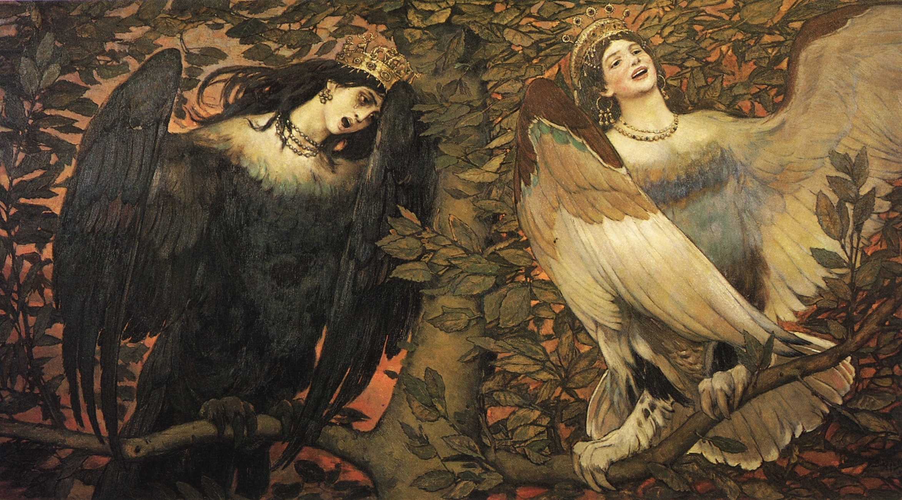

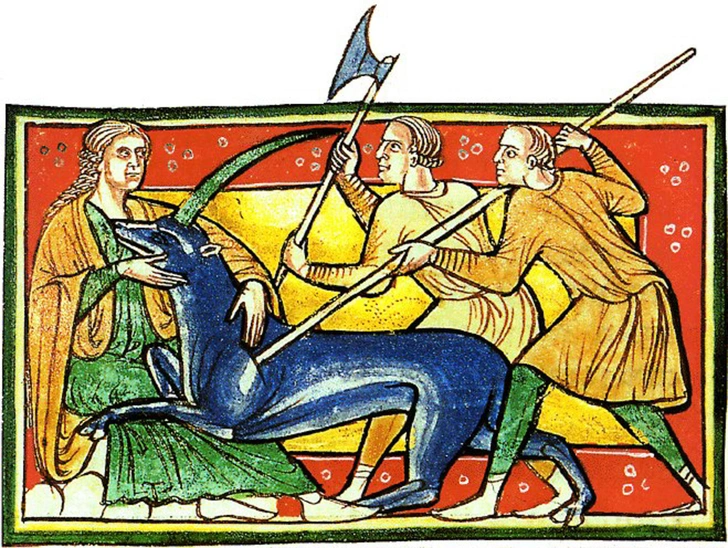
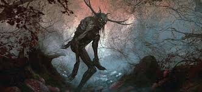
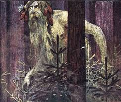




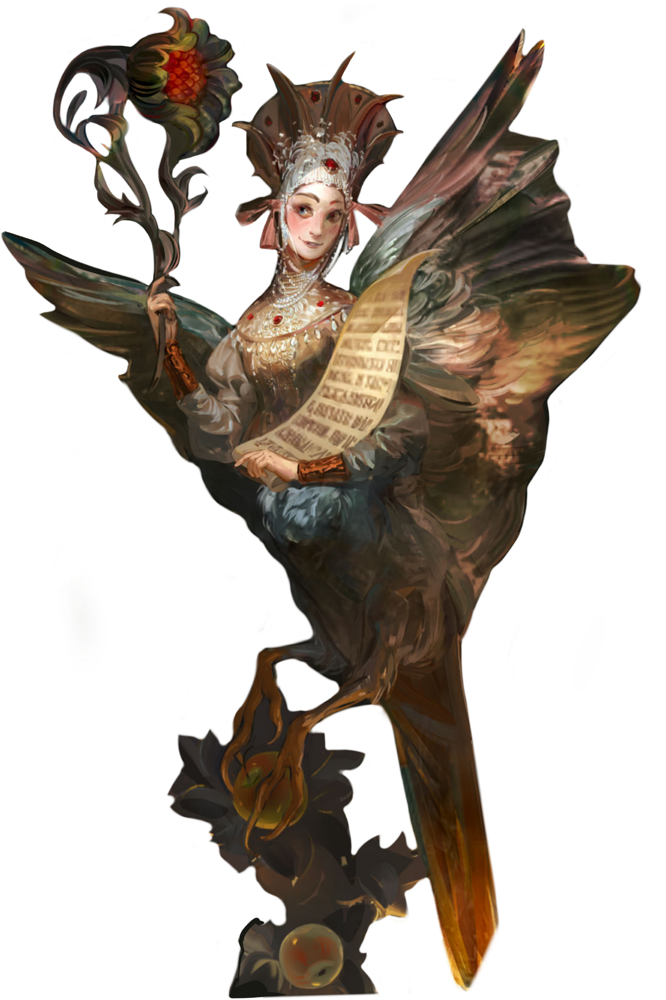
На голове алконоста обычно изображается корона. Это существо имеет женскую грудь, в одной или обеих руках алконост держит райский цветок или развернутый свиток с изречением о воздаянии в раю за праведную жизнь на земле. Имеет белое оперение, является вестником радости и наслаждений. Пение алконоста настолько прекрасно, что услышавший его забывает обо всем на свете. По народным сказаниям, утром на Яблочный Спас прилетает в яблоневый сад птица сирин, которая грустит и плачет. А после полудня прилетает туда птица алконост, которая радуется и смеется. Птица смахивает с крыльев живую росу, и преображаются древа.
Подробнее...Баба-яга — сложный сказочный персонаж. В некоторых сказках Баба-яга обладает определенными устойчивыми атрибутами: она колдует, летает в ступе, живёт в дремучем лесу в избушке на курьих ножках. Баба-яга — всемогущая вещая старуха, охранительница границ «иного царства». По этой версии, Баба-яга — проводник в потусторонний мир, одна нога у нее костяная для того, чтобы стоять в мире мертвых. Образ Бабы-яги видится принадлежащим сразу к двум мирам — миру иному и миру человеческому.
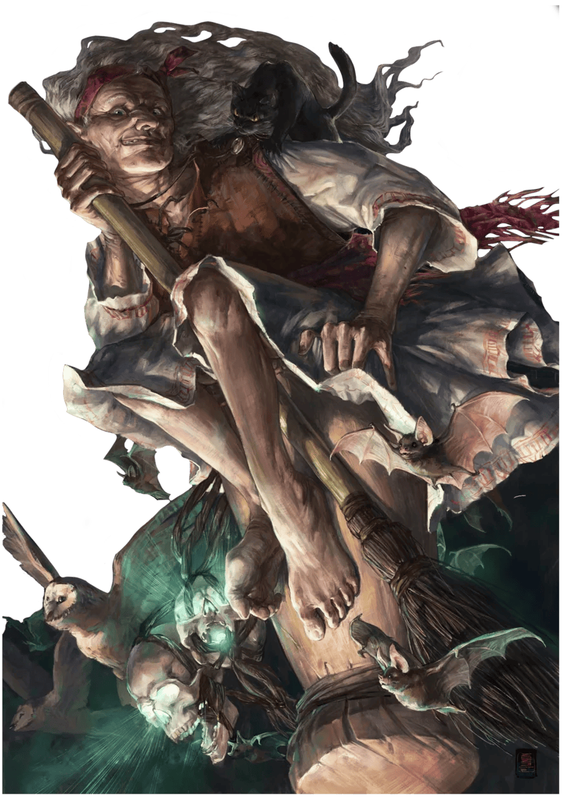
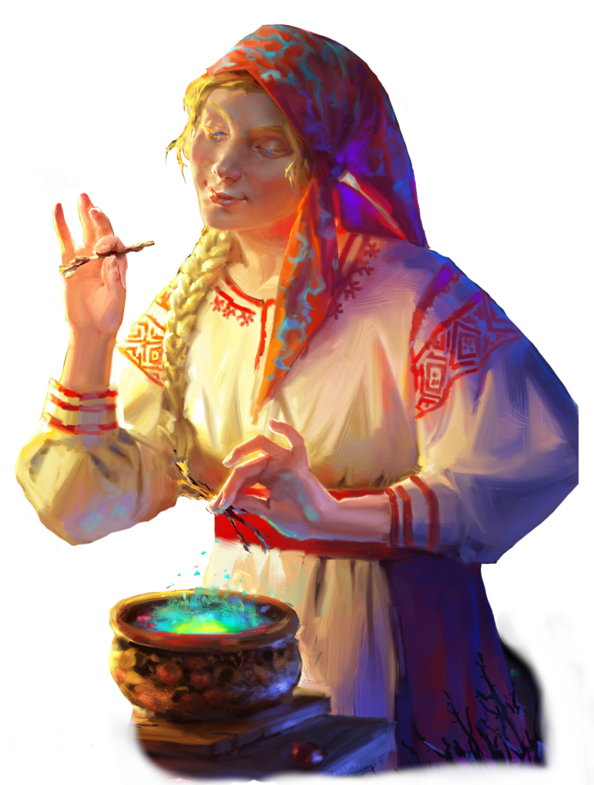
Ведьма – от слова «ведать», «знать». Ведала травы, обереги, могла наслать порчу или помочь ее снять. Ведьма занималась в своей деревне целительством, ворожила, предсказывала будущее. Ведьмовской дар женщина получала от лесных духов или по наследству. Свой дар потомственная ведьма наследовала по материнской линии, но овладеть тайными знаниями можно было и другим способом. К примеру, если в семье рождалось семь девочек подряд, то седьмая считалась ведьмой.
Подробнее...Жар-птица — сказочная птица со сверкающими глазами и золотистыми огненными крыльями. Она излучает свет, который даже в ночное время сияет, словно тысячи огней. Когда Жар-птица поет, из ее клюва сыплются жемчуга. Сама она — олицетворение огня, света и солнца. Питается золотыми яблоками, дающими молодость, красоту и бессмертие, пьет воду из живых источников. Каждый год осенью Жар-птица умирает, а весной возрождается. Считается, что Жар-птица — аналог феникса, символ бессмертного огня.
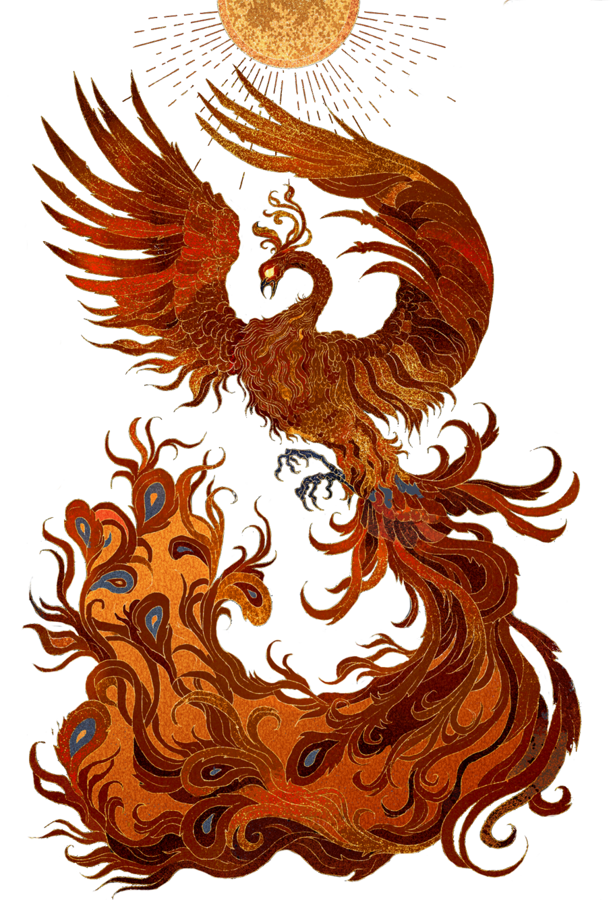
Кот Баюн — огромный кот-людоед, обладающий волшебным голосом. Своими рассказами и пением он заговаривает и усыпляет путников. Тех, у кого не хватает сил противостоять его волшебству и кто не подготовился к бою с ним, кот-колдун убивает железными когтями.
Подробнее...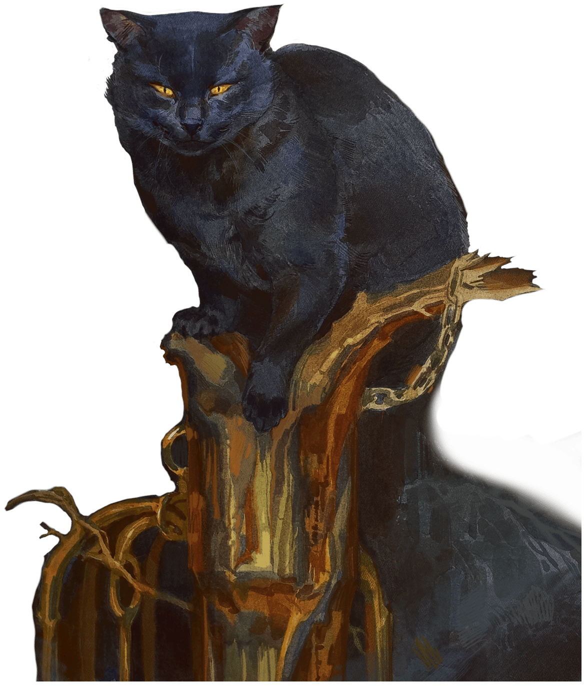
Русалка — персонаж восточнославянский, обычно появляющийся на земле во время Русальной недели и связанный в народном сознании с дождями, туманами, цветением, плодородием и культом предков. Считалось, что русалки опекают поля, леса и воды. Они приносили дождь и благословляли будущий урожай.
Подробнее...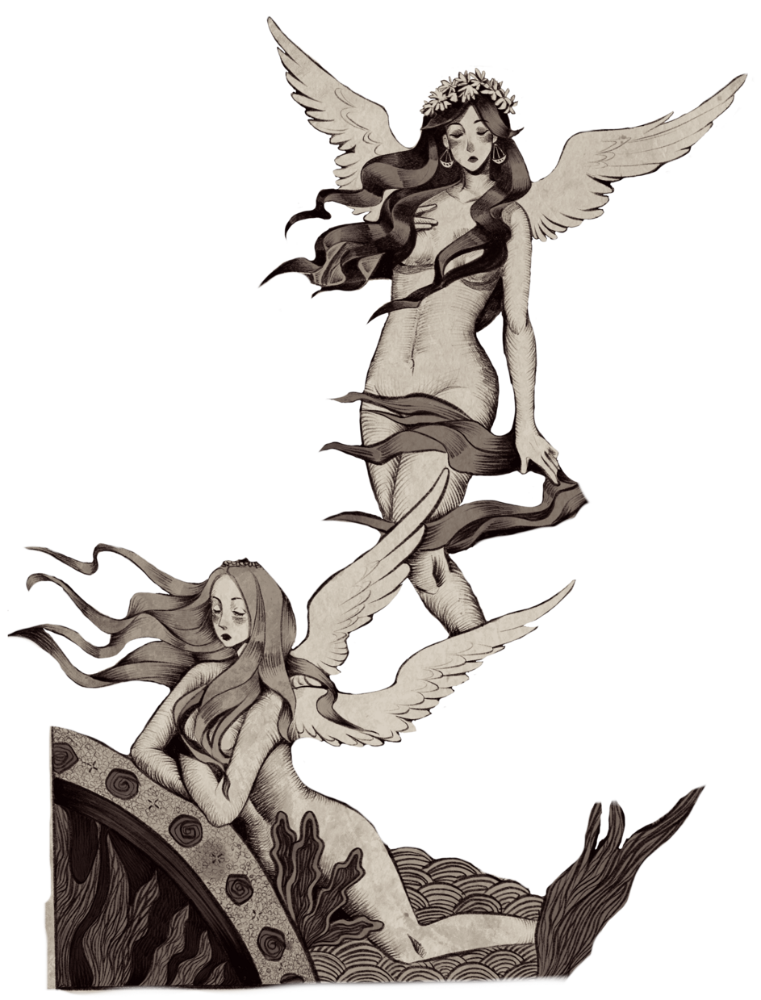
Леший — хозяин леса, покровитель лесных зверей и птиц. С виду похож на мужика или старика с белой бородой, одетого в обычную крестьянскую одежду, но некоторые детали внешности выдают его потустороннюю природу. Характерная черта лешего — способность изменять свой рост. Он может быть вровень с верхушками деревьев или ниже травы. Леший способен превращаться в любого зверя или птицу, в дерево, куст или гриб.
Подробнее...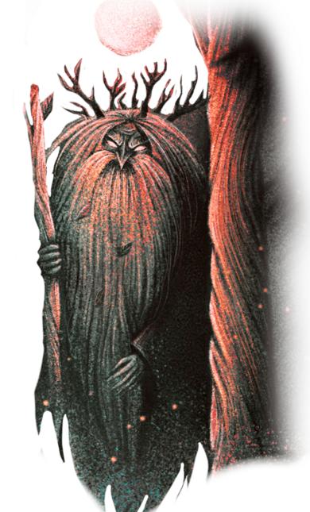